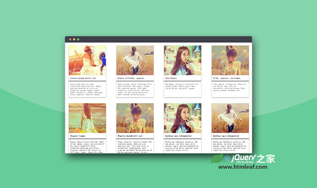

Grd-基于Flexbox的CSS网格系统框架
A CSS grid framework using Flexbox
jQuery之家
返回下载页
Live Demo
Add item
Remove item
-
-top
-middle
-bottom
-stretch
-baseline
-
-left
-center
-right
-between
-around
-
-fill
-1of12
-2of12
-3of12
-4of12
-5of12
-6of12
-7of12
-8of12
-9of12
-10of12
-11of12
-12of12
如果你喜欢这个插件，那么你可能也喜欢:

jQuery动态响应式网格布局插件
简单实用的jQuery响应式网格瀑布流布局插件